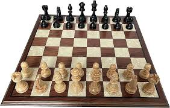
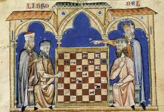
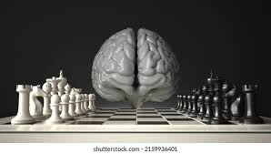

¿Que es el Ajedrez?

El ajedrez es un juego de tablero entre dos contrincantes
en el que cada uno dispone al inicio de dieciséis piezas móviles,
desiguales en importancia y valor, que se desplazan sobre un tablero
capturando piezas del jugador contrario, según ciertas reglas.
Se juega sobre un tablero cuadriculado de 8 x 8 casillas, 12 alternadas en colores blanco y negro,
que constituyen las 64 posibles posiciones entre las que se mueven las piezas durante el desarrollo del
juego.
Al principio del juego cada jugador tiene dieciséis piezas: un rey, una dama, dos alfiles,
dos caballos, dos torres y ocho peones. Se trata de un juego de estrategia en el que el objetivo es
"encerrar" al rey del oponente.
Esto se hace amenazando la casilla que ocupa el rey con alguna de las piezas propias
sin que el otro jugador pueda proteger a su rey interponiendo una pieza entre su rey y
la pieza que lo amenaza, mover su rey a un escaque libre o capturar a la pieza que lo está amenazando,
lo que trae como resultado el jaque mate y el fin de la partida.
Historia

El Ajedrez tiene más de mil años de historia. Circulan muchas leyendas acerca de su origen y diferentes
países se atribuyen su invención. Hoy se cree que el ajedrez constituye una evolución del juego de mesa
llamado shatranj, que proviene, a su vez, del chaturanga, ideado en la India en el siglo VI.
La mayoría de los expertos concuerdan en que el ancestro más antiguo del ajedrez es el Chaturanga,
jugado en la India, aunque el origen exacto del mismo es desconocido. Sin embargo se cree que el juego
se utilizaba para representar una batalla y de esa manera idear estrategias en el campo. El nombre
sánscrito Chaturanga puede significar "juego de cuatro partes", señalando las cuatro partes en las que
se dividía el ejército en el juego.
Algunos de los Beneficios de jugar Ajedrez

Mejora la memoria: El ajedrez requiere recordar movimientos, estrategias y patrones, lo que ayuda a
fortalecer la memoria a corto y largo plazo. Además, el hábito de analizar partidas pasadas contribuye
al desarrollo de una mejor capacidad de retención.
Desarrolla el pensamiento crítico: Cada movimiento en ajedrez implica una evaluación cuidadosa de las
opciones, consecuencias y posibles respuestas del oponente. Esto fomenta la capacidad de analizar
situaciones, prever problemas y tomar decisiones lógicas.
Retrasa el envejecimiento cerebral: Estudios han mostrado que el ajedrez puede ayudar a mantener el
cerebro activo, lo que reduce el riesgo de enfermedades degenerativas como el Alzheimer y otras formas
de demencia.